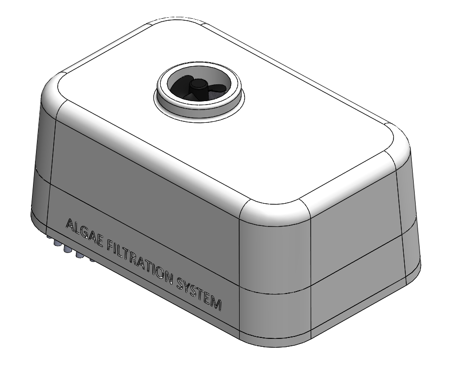
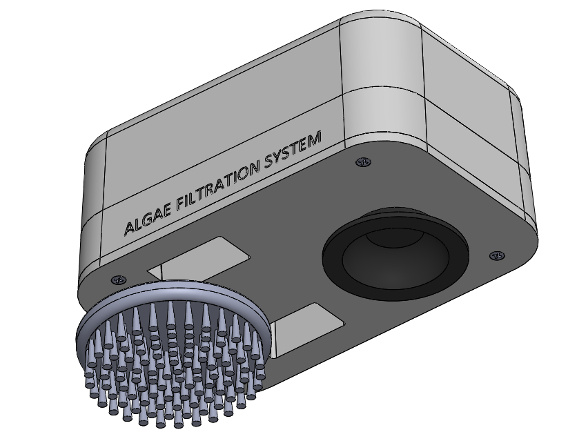
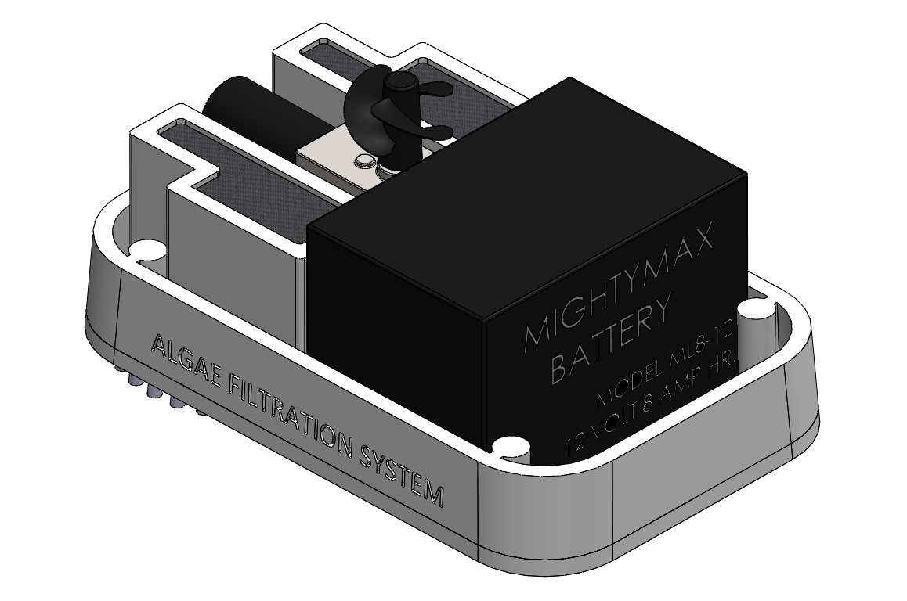
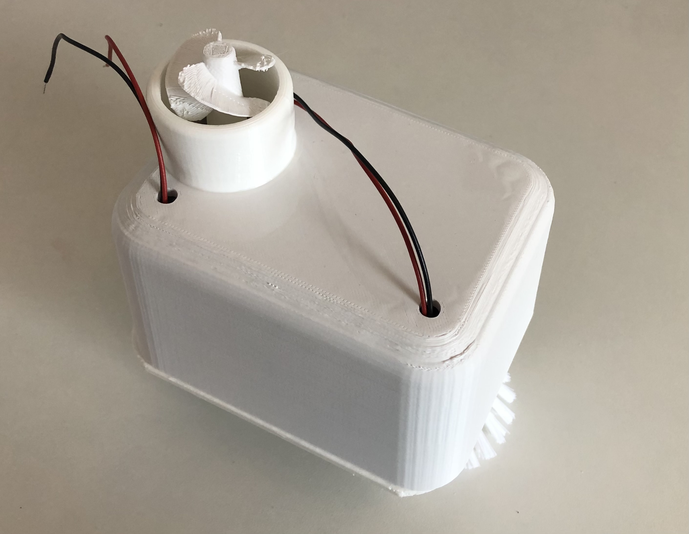
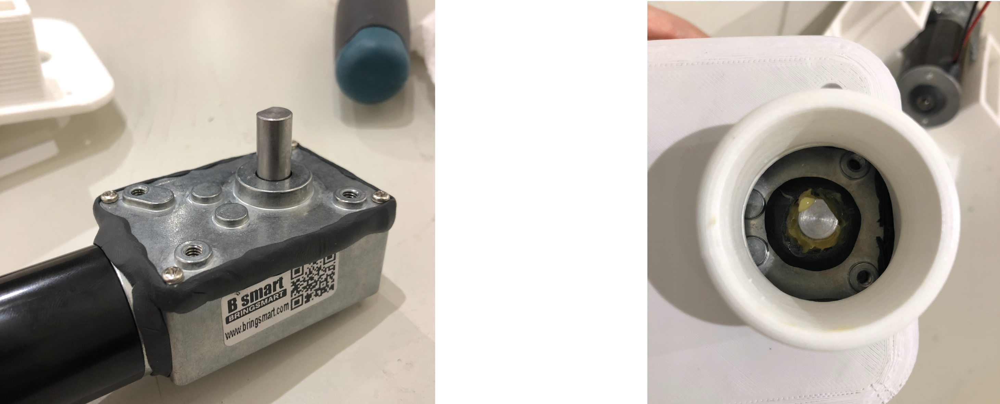
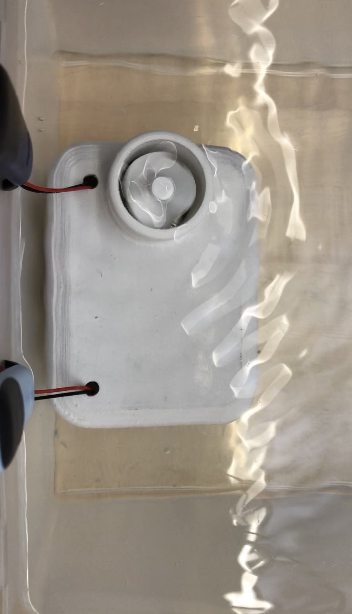
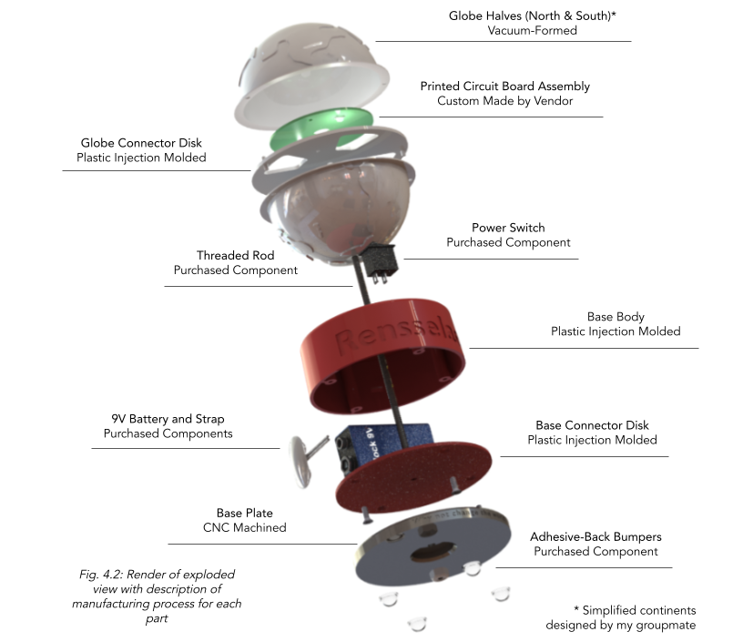
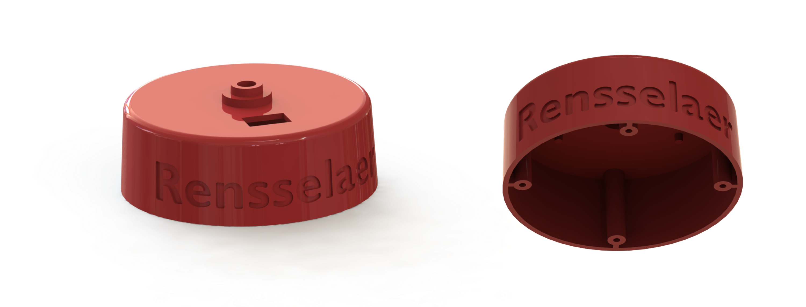

Adjustable length desk organizer made of repurposed redwood
Resume
Education
Master of Science, Mechanical Engineering
Carnegie Mellon University | 2022-2024
Emphasis: Robotic reinforcement learning for interaction with deformable objects
Achievements: BRIDGE Fellowship (2022 - 2024)
Bachelor of Science, Mechanical Engineering
Rensselaer Polytechnic Institute | 2018-2021
Cumulative GPA: 3.55/4.00
Achievements: Inventors’ Studio Innovator Award (2021)
Work Experience
Graduate Research Assistant
Carnegie Mellon University | Aug. 2022 - present
Researching machine learning methods to train a robot to manipulate clay into desirable shapes (e.g. sphere to cube)
Working with robot hardware, computer vision, and key point detection methods
Mechanical Engineer, Intern
Neuralink | Jan. - June 2022
Neural Implant Imaging Station:
Modeled and built hardware setup and developed image processing program for documenting quality of neural implant’s micron-scale threads, removed 4 manual steps from the end-of-line process
Wafer Processing Fixture:
Designed and tested fixture for processing diced wafers to improve solvent flow in chemical baths, megasonic cleaning, and vapor drying processes
Undergraduate Researcher
Rensselaer Polytechnic Institute | Aug. - Dec. 2021
Investigated outlier detection in image processing program written for TFM experiment to provide more accurate results for cellular traction forces in Experimental Cell and Tissue Biomechanics Lab
Mechanical Engineer, Intern
Neuralink | May - Aug. 2021
Neural Implant Testing Fixture:
Designed and 3D printed fixture for end-of-line electrode impedance testing implemented on neural implant R&D production line
Designed parts for machining and injection molding and drafted technical drawings
Manufacturing Technician, Intern
Neuralink | Jan. - May 2021
Responsible for executing all steps of neural implant production process (incl. stress testing, soldering, die bonding, thermal sealing, and leak testing)
Skills
Design:
Solidworks, Siemens NX, GD&T, Tolerance Stack-up, Material Selection, Design for Machining, Design for Plastic Injection Molding
Hi, thanks for visiting my website! My name is Charlotte and I'm a first-year mechanical engineering master's student at Carnegie Mellon. I enjoy problem solving, designing, and making, especially with teams of other passionate engineers and researchers with different backgrounds and interests. I'm fascinated by machine learning algorithms and their ability to learn and predict traditional mechanical systems which is why I joined the Mechanics and AI Lab at CMU where I currently work on a project involving robotic manipulation of deformable objects.
Outside of class I enjoy reading, trail running, cooking, and climbing. Last fall, I ran my first marathon in Upstate New York after only running seriously for about 2 years. I hope to return next year with a bit more experience and a whole lot more training for what I hope to be another enjoyable 26.2!
Gastrostomy Skin Level Device
Design for medical device for patients who require enteral feeding focused on long-term durability and patient comfort
Background:
Skin level devices, often referred to as “G-buttons” or “Gastrostomy buttons” are medical devices that are inserted through a surgical incision in the stomach called a gastrostomy and interface with a gastrostomy tube through which nutritional formula flows. Enteral nutrition is required for anyone who cannot meet their nutritional needs by oral intake but have a functional gastrointestinal tract (e.g. Cystic Fibrosis, Parkinsons, patients undergoing chemotherapy, etc.).
About half a million children and adults in the United States rely on feeding tubes everyday and there are customer needs among this population that devices on the market have not yet addressed such as durability.
Objectives:
After speaking with a family friend who uses a gastrostomy tube every night as part of their Cystic Fibrosis (CF) treatment, I wanted to develop a novel design for a gastrostomy skin level device to address some of the feedback they provided me as well as feedback I found from online resources.
Rest of Project Description In Progress...
Algae Cleaning System
Novel design for addressing issue of diminishing kelp forests off the Pacific coast of the U.S. and Mexico
Background:
This project was part of Rensselaer Polytechnic Institute’s Engineering Innovation for Society (EIS) Blitz which is a condensed 4-week challenge offered as part of the Inventors’ Studio 2 capstone course. The purpose of the challenge is to quickly work through the Lean Design for Six Sigma process. The theme for this semester encouraged students to look at the impact humans are making on marine ecosystems.
My team and I decided to focus our design on kelp forests. Kelp forests are currently diminishing off the western coast of the United States and Mexico due to warming waters and overfishing of white abalone. The white abalone diet consists of algae that grows on rock surfaces on the ocean floor. Abalone therefore help to clear rocky surfaces providing an optimal place for kelp to grow.

Fig. 2.1: Full CAD Assembly of System
Objective:
To address the overgrowth of algae due to the decreasing population of white abalone, my team and I decided to create an algae filtration system to mimic the abilities of a white abalone. The system would work in conjunction with current efforts to reduce overfishing of white abalone, seed white abalone in restored kelp forests, and require preventative action against climate change.
Approach:
The idea behind the algae filtration system is that it will be secured to the rock surfaces in endangered kelp forests via a strong suction cup. It will then be able to clean the rock surfaces of algae using a motor-powered brush located on the bottom of the system. After the brush releases the algae from the rock surface, a motor-powered turbine will produce a vacuum that will pull the now algae-filled water through the filter. Algae will become trapped on the underside of the filter while clean water will exit through a top vent in the external casing. I created all of the following CAD models and assemblies using Solidworks.
Components:
External Casing
The external casing is an 11 inch by 7 inch by 4.25 inch enclosure made of Nylon 6/6 as this material has high corrosion resistance and behaves well in marine environments for extended periods of time. This material is also easily injection moldable meaning it would be relatively cheap to manufacture several hundred of these enclosures.
The round brush and heavy-duty suction cup can be seen in Fig. 2.2 as well as the openings in the bottom of the external casing that lead to the filter.

Fig. 2.2: Brush and suction cup of system
Internal Components
The external casing houses two 12 volt (V) DC motors, a turbine (Fig. 3.5), two simple filters made of mesh, and a 12V 8 ampere-hour (A hr.) SLA battery, shown as the large black box in Fig. 3.4. The turbine is press-fit onto the output shaft of one of the DC motors while the other DC motor is connected to the round brush.

Fig. 2.3: Interior components of system
Prototype:
The system prototype is a 3D printed 1:2 scaled version of the full system and includes two DC motors, one suction cup, a 2 inch diameter round brush, and a turbine. The battery does not fit inside the scaled enclosure so the DC motors were attached to a 12V power adapter for the final prototype testing presentation. The DC motors are waterproofed with Sugru™ and marine grease. Images of the prototype are shown below in Figs. 2.4-2.6.

Fig. 2.4: 1:2 Scaled prototype
Challenges:
I thought it would be most meaningful to our presentation to test the prototype underwater but this meant the DC motors had to be waterproofed. I originally thought sticking them in a food storage container would be adequate but containers I found that fit the motors were very large and would require me to scale the enclosure to fit over them. I then read this article from robotshop.com about waterproofing motors for marine use using Sugru™ and marine grease.
I rolled out small cylinders of Sugru™ and pressed them into all gaps in the external casing as shown in Fig. 2.6. I then added marine grease to the output shaft, as shown in Fig. 3.11, to ensure water does not enter between the casing and the shaft.

Fig. 2.5: Waterproofing motor
Prototype Testing:
The prototype was tested in a clear container filled with tap water. The wires from each motor were clamped to the side of the container to ensure they do not come in contact with the water. Each motor was connected to a 12V power adapter to test whether the motors were fully functional after waterproofing.

Fig. 2.6: System running underwater
Poster Presentation:
-->
A poster was designed to present along with the prototype testing presentation. It covers the background information about the project, a root cause analysis of the problem, a section on the population that are currently affected by diminishing kelp forests, system requirements for the full system design, images and a description of our prototype, and a description of the full system design along with engineering analysis and a technical drawing of the assembly.
Globe Night Light
Design of a small, night light desk ornament along with a full manufacturing and assembly process for 500 units
Background:
This project presents my CAD models and renders as part of Rensselaer Polytechnic Institute's (RPI) Manufacturing Processes & Systems (MPS) Laboratory course focused on exposing students to common manufacturing techniques used in industry (e.g. plastic injection molding, CNC machining, metalforming, and automation).
Objective:
Each MPS team is tasked with designing a product and writing a technical data package (TDP) outlining every step of the manufacturing process with the intention that 300 of the product will be produced from raw materials in the RPI Manufacturing Innovation Learning Lab (MILL). The TDP includes all information for the product including product component descriptions, a bill of materials, all technical drawings for product components and all assembly fixtures, vises, and molds used in the manufacturing process, and detailed manufacturing forms including simulations run on each part using software like Mastercam and Autodesk Moldflow. The TDP also includes a detailed description of the assembly process including part transfer and quality control, and a brief description of how all 500 of the product will be packaged.
Approach:
The team was split into roles, and from there, our team’s globe model was developed and used to outline every step of the manufacturing and assembly process for our product.

Components:
Baseplate
The base plate adds weight to the bottom of the assembly such that the user can spin the globe without it tipping over. I designed the baseplate with a 3 inch diameter and 0.25 inch height. It also features a clearance hole for the 6-32 threaded rod and a 0.05 inch chamfer.
Fig. 3.3: Base plate of product designed for CNC machining from Aluminum 6061
Base Body
The base body is the housing for the 9V battery and power switch. I designed it with constant wall thickness of 0.07 inches and a 3 degree draft on all vertical surfaces to abide by plastic injection molding design parameters.

Fig. 3.4: Base body designed for plastic injection molding from ABS plastic
The base body also has 4 bosses extruded from its underside such that the base connector disk can be screwed into the bottom of the base body.
The “Rensselaer” text is CNC machined into the part post-plastic injection molding to avoid use of a side-action cam in the PIM mold.
Base Connector
The base connector interfaces with the bottom surface of the base body and is secured by four 4-40 flat head screws. The connector also has a thickness of 0.07 inches such that the mold for it can be implemented into the same mold as the base body. A center boss with a tapped hole secures the base connector to the threaded rod which extends the entire height of the assembly.
Fig. 3.5: Base connector designed for plastic injection molding
Globe Connector Disk
The globe connector disk is the interface between both vacuum-formed globe halves upon which they are heat staked. The two outermost pins exist for the purpose of heat staking. Similar to the base body and base connector, the globe connector has a thickness of 0.07 inches such that it can be produced using the same mold as the other two parts.
Fig. 3.6: Globe connector designed for plastic injection molding
An off-centered boss with a 2-56 tapped hole was added to secure the circular PCBa as shown in Fig. 4.8. Small pins were also added to act as support pins for the PCBa and lift it off the main surface of the globe connector.
Hardware setup and image stitching program for documenting micron-scale implant threads
Thanks for being interested in this project! I'm not quite finished writing a description for it.
Electrode Test Setup
Setup for positioning 3D-printed neural implant electrodes for stimulation testing
Background:
This project represents my work in the Panat Lab at Carnegie Mellon University where they are developing a microelectrode array fabricated from depositing metal nanoparticles onto a substrate. The long, narrow shanks are then sintered to create conductive paths for bioelectric signals.
Objective:
The array can be tested in vivo using neural activity from anesthetized mice but benchtop testing allows for neural recording sessions using a stimulating electrode to simulate neural activity which can reduce variability between experiments and eliminates the need for live animals.
1. Reduce movement of the electrode and substrate from outside disruption by securing them in fixtures designed for their unique geometry.
2. Increase accuracy when moving electrode and substrate by securing their fixtures to translational stages.
3. Reduce difficulty of clearing the optical table by securing all hardware to an optical breadboard that is screwed into the table and can easily be switched out when needed.
Approach:
The array can be tested in vivo using neural activity from anesthetized mice but benchtop testing allows for neural recording sessions using a stimulating electrode to simulate neural activity which can reduce variability between experiments and eliminates the need for live animals.
Redwood Desk Organizer
Adjustable length desk organizer made of repurposed redwood
Thanks for being interested in this project! I'm not quite finished writing a description for it.